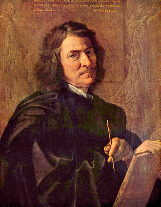
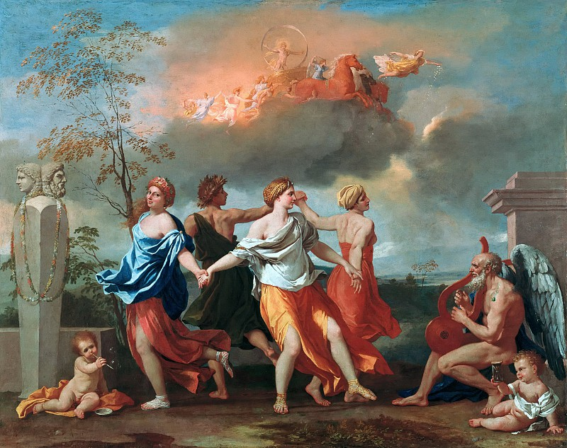
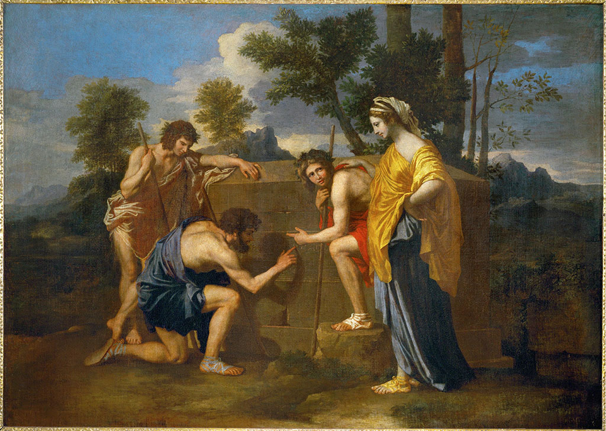
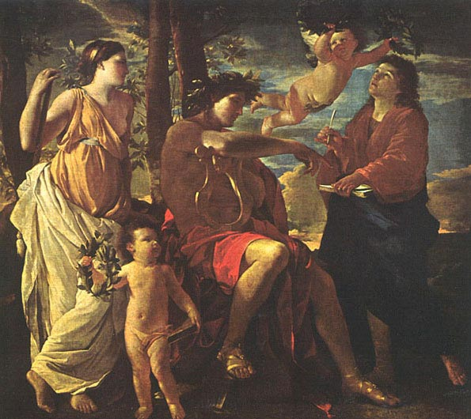
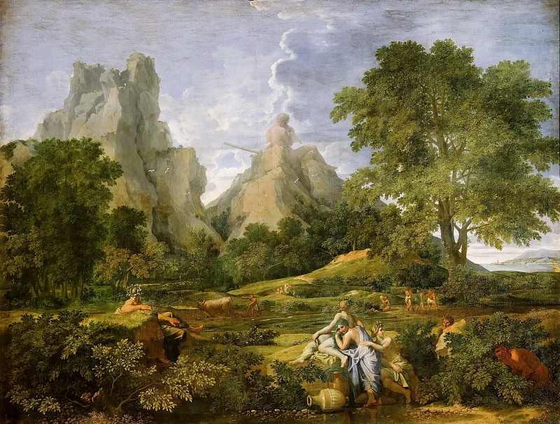
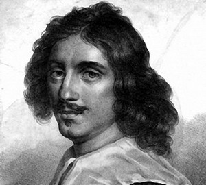
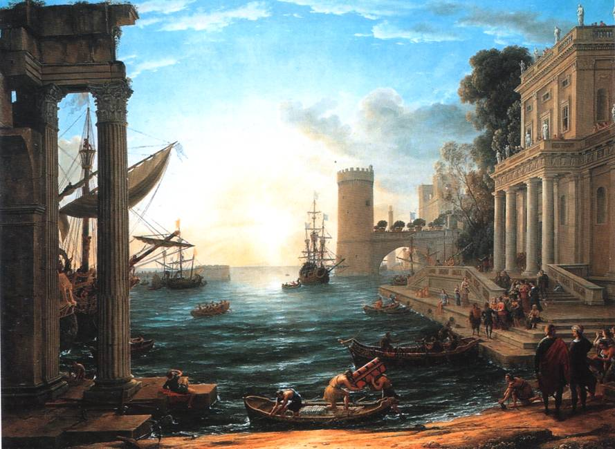
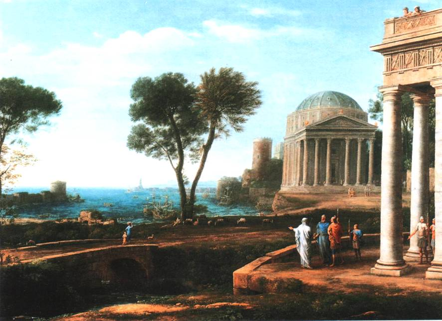

Ранние образцы стиля классицизм появились во французском искусстве середины ХVII в. Название его происходит от исключительного пристрастия художников (и их покровителей – заказчиков ) к культуре древней Греции и Рима. Создаётся впечатление, что французские короли и крупные феодалы не замечали (или не желали замечать) окружающей действительности и подменяли её иллюзорным миром античных богов, героев, нимф и пастухов.
Действительность же была отнюдь не прекрасной и гармоничной. Первая половина ХVII века была беспокойной, мятежной эпохой в истории Франции и всей Европы. Это было время всестороннего кризиса во всех областях деятельности человека – экономической, социальной, политической, религиозной, научной и художественной. Войны между странами, гражданские войны, крестьянские и рабочие мятежи разоряли страну. Экономический кризис, чума, голод, произвол чиновников, насилия военных, карательные экспедиции – ещё не полный перечень бедствий Франции. Но для французских королей самым опасным было усиление буржуазии во всех областях жизни. По стране уже бродил призрак буржуазной революции.
Естественно, феодальная власть стремилась всеми силами удержать свои позиции. Людовик ХIV заявил: «Государство – это Я». В ответ вспыхнула Фронда – мятежное антиабсолютистское движение, охватившее различные слои третьего сословия.
Мятеж был подавлен, участники репрессированы со всей возможной жестокостью. Королевская власть стремилась всеми способами укреплять свои позиции. В числе прочих мер этой цели должно было служить искусство – такое искусство, которое могло противопоставить стихии жизни порядок и дисциплину, разгулу страстей – разум и логику, хаотической действительности – исторические примеры образцовой организации общественной жизни. Такие примеры нашлись, конечно, в истории Древней Греции и Рима. Возник новый художественный стиль – классицизм.
Одной из важнейших черт этого стиля было обращение к формам античного искусства, как к идеальному эстетическому и этическому эталону. Согласно взглядам теоретиков и практиков классицизма, художественное произведение – это плод разума и логики, торжествующих над хаосом и текучестью чувственно воспринимаемой жизни. Ориентация на разумное начало, на непреходящие образцы определила твёрдую нормативность этических требований: подчинение личного общему, страстей – разуму, долгу, законам мироздания.
Заметим, что вся эта риторика имеет чисто классовый характер и служит поддержке королевской власти, уже предчувствующей свой скорый конец. Следует также отметить принципиальную разницу в трактовке античного наследия деятелями Ренессанса и Классицизма ХVII – XVIII вв.
Закреплению теоретических доктрин классицизма способствовала деятельность основанных в Париже Королевских академий – живописи и скульптуры (1648 г.) и архитектуры (1671 г.)
Крупнейшими мастерами классицизма XVII в. были французские художники Николя Пуссен и Клод Лоррен.
Никола Пуссен (1594 – 1665)

Биография Пуссена теснейшим образом связана с его творчеством. В решающие моменты его жизни он был как будто направляем невидимой рукой судьбы точно туда, где мог свершить предназначенное ему Провидением.
Пуссен родился в Нормандии, в семье военного. Восемнадцати лет от роду он тайком от родителей отправился в Париж. Здесь он встретил молодого шевалье, страстного поклонника искусства, который помог юноше обосноваться в городе. Не найдя в Париже учителя, Пуссен самостоятельно изучает живопись мастеров античности и Возрождения. Классическое искусство было для него «молоком матери».
В 1624 г. Пуссену удалось добраться до Рима. Здесь он посвятил годы тщательному изучению искусства старых мастеров. Кроме того, он изучает геометрию, оптику, анатомию, делает замеры античных памятников. Он знакомится с трудами по искусству Дюрера, иллюстрирует рукописи Леонардо да Винчи. Он постигает латынь и философию, становится образованным человеком.
Через несколько лет после того, как он обосновался в Риме, Пуссен начал работать по заказам кардинала Барберини, его секретаря Кассиано дель Поццо, а вскоре – и других римских аристократов.
Вторая половина 20-х годов и начало 30-х были весьма продуктивными – Художник создаёт множество картин на исторические и библейские темы: «Смерть Германика», «Взятие Иерусалима», «Парнас», «Вдохновение поэта», «Спасение Моисея» и др.
В 1629 г. судьба послала Художнику болезнь, и вместе с нею – преданную супругу, домашний очаг и небольшое состояние. Всё это позволило ему с новыми силами продолжать героический труд на ниве святого искусства. В 1632 г. Пуссен становится членом Академии св. Луки. В 30-е годы он создаёт шедевры классицизма «Царство Флоры», «Танкред и Эрминия», «Вакханалия»…
В 1639 – 1642 гг. Пуссен работал в Париже по приглашению Людовика XIII-го. Но условия работы во Франции, при дворе, не были приемлемы для Художника. Он не хотел, по его словам, «Превратиться в пачкуна, подобно другим, находящимся здесь». К тому же, местные придворные художники интриговали против него. В конце 1642 г. Пуссен уехал в Рим, обещая вернуться. Но смерть короля освободила его от этого обещания.
Здесь опять проявилась забота Судьбы о своём любимце.
Начинается Второй итальянский период творчества великого Мастера.
Различие между первым и вторым периодами весьма существенно.



На картинах первого периода мы видим «золотой век» человечества, воспетый в поэме Овидия. Здесь на фоне ласковой природы прекрасные нимфы ведут хоровод под музыку нагого Пана (божества Природы); здесь молодые пастухи, подобные Аполлону, изучают надпись на древнем надгробии, а красавец-поэт, увенчанный лаврами, услаждает слух молодых женщин своими стихами. Это образ идеального мира, устроенного согласно высшим законам разума. Человек здесь – царь природы, он разумен и свободен.
В своих многочисленных произведениях на исторические темы Пуссен выражает идеалы мужества, преданности общему делу, самопожертвования и героизма. Эти качества безусловно хороши для «человека общественного», но возникает вопрос – почему примеры этих добродетелей можно находить и демонстрировать только в отдалённой истории? Более того: возникает сомнение в верности тезиса об искусстве как зеркале природы. Искусство классицизма отображает не действительность, а некий миф, или сказку о действительности. Его можно сравнить с роскошным театральным занавесом, на котором изображено то, о чём человечество мечтает. И всё же признаем: в этих сказках есть нечто необходимое людям. Один поэт сказал: «Тьмы низких истин нам дороже/ нас возвышающий обман». А другой добавил: «Миф – это то, чего никогда не было, но что всегда есть». И то, и другое – правда.
Потому и живут в веках античные статуи, римские фрески, плафоны Микеланджело, картины Рафаэля и Пуссена. Как хорошо взглянуть на них и вспомнить, что мы – не только «тварь дрожащая», но Человеки – носители образа и подобия Творца. Современное искусство почему-то не стремится поддержать в нас это убеждение.
Во втором римском периоде творчества Пуссена его взгляды на жизнь несколько изменяются. Главной темой картин становится пространство – необозримый пейзаж с высоким небом, горами и долинами. Здесь нет бурь и катастроф, громов и молний. Здесь всё дышит покоем и величием, здесь обитает Божество. Пусть оно носит имя Полифема – мы знаем, что это не суть важно, мы ощущаем здесь Божество как единую творящую силу, некое Дао (или назовите его как хотите). (рис. 233)

Здесь человек уже не может противостоять Природе – он осознал свою несоизмеримость с нею, уменьшился в размерах и почти исчез со сцены. Эта мысль Художника была пророческой – наступающие на земле новые времена изменили состав человечества, привели к нивелированию различий между людьми и к уменьшению масштаба личности. (Справедливости ради нужно отметить различие между маленькими фигурками в произведениях стиля рококо и классицизма. Первые веселятся и шалят, вторые заняты трудом и серьёзными делами, да и одеты приличнее).
Клод Лоррен (1600 – 1682)
Жизненный путь этого художника во многом повторяет биографию Никола Пуссена, а мотивы творчества созвучны искусству его великого соотечественника. Недаром, видимо, рифмуются их имена.
Лоррен был рождён в Лотарингии, в семье крестьянина. В 1613 г. он сам, как и Пуссен, отправился в Рим учиться живописи и был принят в мастерскую Агостино Тасси. Молодой художник специализировался в жанре пейзажа. Как выходец из крестьянской семьи, он чувствовал органическое родство с природой и желал передать в живописи все её особенности как можно точнее. Для этого, как говорят, он изучал оттенки цвета неба, целыми днями лёжа на спине и глядя в небосвод. Свои познания, почерпнутые непосредственно из натуры, он воплощал в живописи так точно, что заслужил прозвище «огнепоклонник».
В работах Лоррена соблюдены все нормы и каноны классицизма, но в них есть и отличие от пейзажей Пуссена – они ближе к натуре, т.е. более реалистичны. Морской воздух более влажен, краски неба и воды переданы с максимальной точностью, одежда людей скроена по современному фасону, а не по античному.
В быту Лоррен был по-крестьянски практичен. Он надписывал все свои работы с обозначением даты и заказчика (или покупателя). С 1630 года он задокументировал около 200 своих работ на протяжении 50 лет.
В 1633 г. он был принят в Академию св. Луки, в 1643 – в «Общество виртуозов», а также входит в «Клуб перелётных птиц» - содружество иностранных художников в Риме. Никола Пуссен был его ближайшим другом (и, конечно, примером для подражания).



На протяжении двух столетий картины Лоррена были украшением чертогов кардиналов, римских пап и испанских королей. Они не потеряли обаяния и в нашем веке.
Основные черты классицизма ХVII века
- Первенство интеллектуального начала перед чувственно-эмоциональным.
- Заимствование сюжетов картин из античной истории, мифологии и литературы.
- Идеализация форм природы и человеческого тела.
- Нормативность композиционных приёмов и пропорций фигур.
- Гармония, красота, мера, число – как основополагающие принципы.
- Точность рисунка и сдержанность колорита.
- Духовность, возвышенность, благородство образов живописи.
Следует заметить, что классицизм в живописи ХVII в. был не единственным стилевым направлением. Наряду с ним существовал также стиль рококо, удовлетворяя потребности как господствующего класса, так и набирающей силу буржуазии. Кроме этого, в жанре портрета наблюдается явное стремление к реализму, обусловленное его спецификой.
Сложность ситуации в мире искусств подобна ещё бoльшей сложности в мире наук. ХVII век прославился трудами великих учёных во всех областях естественных наук, математики, физики, философии. Достаточно назвать здесь имена Ф.Бэкона и Б. Спинозы, П. Гассенди и Р. Декарта, Г.Лейбница и Исаака Ньютона. Развитие производительных сил требовало прогресса науки и смены ценностей в области мировоззрения. Классицизм как господствующий стиль сходил с исторической арены, подобно тому, как феодализм уступал место капитализму. Прощальный парад классицизма состоялся во Франции ХVIII века (но затем продолжал «служить» русскому царизму ещё много лет).
Л. Миронова, 15.10.2016